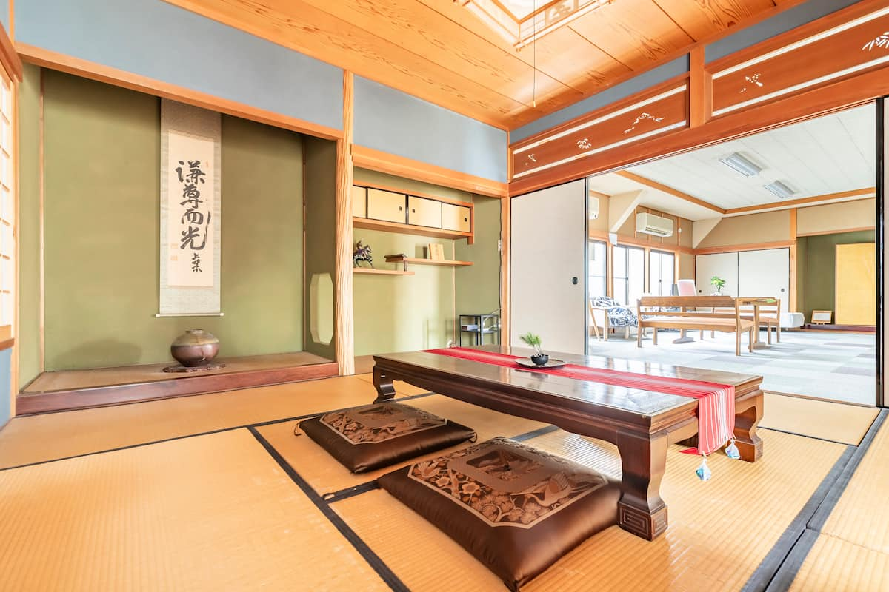

南海本線 貝塚駅（NK26）11:30
改札を出たら西口へ
- 水間鉄道の貝塚駅は東口側にあるので反対側です
- 西口にはロータリーとタクシー乗り場があります
- ランチの店も宿も駅から歩ける距離です
出典: 南海電鉄 貝塚駅 ／ 4travel 貝塚駅の旅行記
LINEグループで決まったことを1枚にまとめました。時刻と運賃は9月25日に調べ直した数字です。まだ決まっていないことには赤い札を付けています。

ジェットスター便なので第1ターミナル着。空港でコーヒーを飲んでから貝塚へ向かう予定。
てつろー 便名と時刻は未定Peach MM304（成田8:30発）。第2ターミナルから関西空港駅までは連絡バスで移動（乗車7〜9分・約5分間隔）。
ユウキ南海 空港急行なんば行（1番線）。乗り換えなしで11:24に貝塚着。てつろーさんはこの電車の予定。ユウキは一本前の10:53発（11:08着）に間に合えばそちら。
てつろー・ユウキシンヤさんが西口ロータリーで待っていてくれます。そのままランチへ。店は11:30で予約済みで、駅からすぐ。いつもゲストを連れて行く、長屋を改装した地産地消のお店とのこと。
3人シンヤさんのリスティング。駅から歩いて4分。この日は収録のためにブロックしてもらっています。
3人てつろーさんは夜の便で関空から東京へ（日帰り）。帰りはシンヤさんが車で送れるかもしれない、という話が出ています。ユウキは大阪に2泊して、9月28日（月）21:00関空発のジェットスターGK238で帰ります。
終わる時刻は未定貝塚市でAirbnbの宿を10年以上続けているスーパーホスト。2017年に大阪ホームシェアリングクラブを立ち上げた人で、Airbnb Host Advisory Board（2021〜22年）の初期メンバー。2025年には米国国務省の交流プログラムIVLPに招かれ、アメリカ5都市で地方の観光を見てきた。英語と中国語が話せる。みんらじのリスナーでもある
このグループを作った人。6月末のイベントでシンヤさんと10年ぶりに再会したのが今回の取材のきっかけ。今回は日帰りで、成田と関空を飛行機で往復する
フリースクールの高校生が空き家を民泊にして運営しているプロジェクトで、シンヤさんがアドバイザーをしている。26日は高校生の行事と重なるため見学はなし。別の日の取材には前向きとの返事をもらっている
Airbnbアンバサダーやコミュニティリーダー、大家の会の理事などが集まる任意団体。8月の案では夜に座談会をする予定だったが、今回は声をかけないことになった。活動の話はシンヤさんから聞く
てつろーさんが熊野の宿を探したときに最初に思い浮かべた人。高野山のほうの人だったかも、という話で止まっている
南海の空港急行で乗り換えなし。電車に乗っている時間は14〜15分、運賃は600円（ICカードも同じ）。9月26日は土曜なので土休日ダイヤです。
| 関西空港駅 発 | 貝塚 着 | 種別 | メモ |
|---|---|---|---|
| 10:39 | 10:53 | 空港急行 なんば行 | |
| 10:53 | 11:08 | 空港急行 なんば行 | ユウキが間に合えばこれ |
| 11:10 | 11:24 | 空港急行 なんば行 | てつろーさんの予定 |
出典: Yahoo!路線情報（9/26 11:24着で検索） ／ 南海バス 関西空港の連絡バス ／ 乗り換えなし15分・駅から徒歩4分はシンヤさんのLINE（9/12・9/25）
出典: 南海電鉄 貝塚駅 ／ 4travel 貝塚駅の旅行記
| 時間 | 0〜6時 | 6〜12時 | 12〜18時 | 18〜24時 |
|---|---|---|---|---|
| 降水確率 | 50% | 70% | 90% | 80% |
出典: tenki.jp 貝塚市の天気（当日朝にもう一度見てください）
シンヤさんが8月3日に送ってくれたネタ帳と、てつろーさん・ユウキの聞きたいことです。どれを話すかは当日決めます。
出典: JNTO 訪日外客数（9/16公表の8月推計値）／ 新宿区の方針は日経（9/4）・TOKYO MX（9/8）の報道
分かったらLINEで共有して、このページも直します。